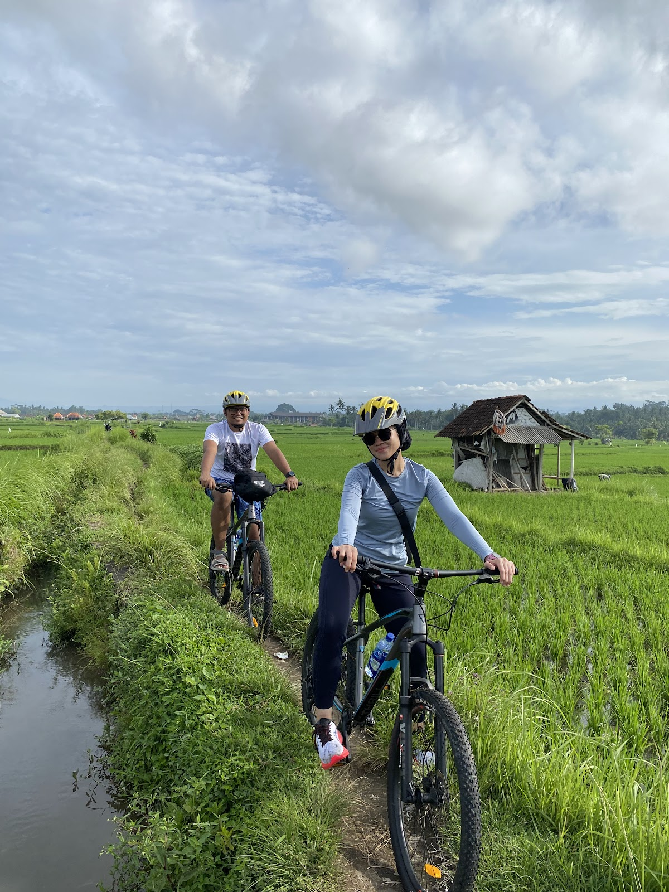

Saving Package • From Rp. 350.000/adult

Lunch⛔, pick up and drop off hotel⛔
On this tour, we will ride through village road and ride inside of the rice fields in Ubud village. Trip in Ubud countryside is combination of uphill, downhill, flat, small road, rice fields. Go to start point 15 - 20 minutes from Ubud. Lunch and transportation are not included.
Come to Start point : You can come to my house using the transportation you have, such as a Taxi, Gojek, or Grab.
Start Cycling : Upon arriving my house, hop onto your bicycle and embark on your normal bike journey, all while taking in the natural views of Bali's landscapes. This trip is combination of uphill, downhill, flat, small road, rice fields. Go to start point 15 - 20 minutes from Ubud. The uphill and downhill are not steep. We will ride for 12 km, this trip is more exercise. We have e-bike option for this trip.
Along the route, you'll explore a variety of unique locations, including :
#Some locations may be omitted in case of overtime, as we prioritize your enjoyment and want to ensure you don't get bored.
Cultural Immersion : Throughout the tour, engage with locals, ask questions, and learn about Balinese culture, enriching your overall experience.
❌ Lunch : Rp. 70.000/pax by rupiah cash💸
❌ Breakfast : Rp. 40.000/pax by rupiah cash💸
❌ Pick up - return to hotel (Additional prices below)
Running shoes or Flip-flop, Sunblock, Camera, Money (cash payment after finish cycling tour).
Cycling in the morning :
• Nusa Dua area : 06.30 a.m – 06.45 a.m (return 04.00 p.m)
• Kuta, Seminyak area : 07.00 a.m – 07.10 a.m (return 03.30 p.m)
• Sanur area : 07.20 a.m – 07.45 a.m (return 03.15 p.m)
• Ubud area : 08.20 a.m – 08.30 a.m (return 02.45 p.m)
Cycling in the afternoon :
• Ubud area : 01.00 p.m - 02.00 p.m
*Free cancellation up to 24 hours in advance.